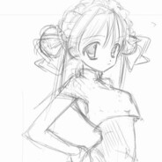
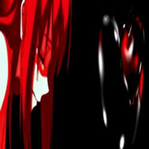
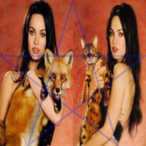

Таблиця лідерів рейтингу
| Місто | Гравець | Країна | Матчі | Відсоток перемог | Кількість рейтингу |
|---|---|---|---|---|---|
| 1 |  тварь тварь |
Україна | 1 651 | 53,73% | 13594 |
| 2 | flawent | Україна | 1 390 | 52,52% | 12988 |
| 3 | fighting demons | Молдова | 1 614 | 54,83% | 12396 |
| 4 | abandoned sad | Словакія | 1 840 | 51,58% | 11996 |
23 АПРЕЛЯ 2024 Г.
Обновление Dota 2 — 23 апреля 2024 года
- Исправлена ошибка, из-за которой в боевой статистике профиля, доступной с подпиской Dota Plus, изменение рейтинга отображалось равным нулю, если в игре использовался жетон двойной ставки рейтинга. Данная ошибка никак не влияла на ваш рейтинг и была исключительно визуальной.
- Исправлена ошибка, из-за которой жетоны двойной ставки рейтинга не выдавались должным образом. Недостающие жетоны уже добавлены на затронутые аккаунты.
- Исправлена ошибка, из-за которой индикатор голоса мог не отображаться у некоторых игроков.
- Исправлена ошибка, из-за которой кнопка ставки двойного рейтинга могла не отображаться у некоторых игроков.
- Исправлена ошибка, из-за которой ульт у Shadow Demon можно было изучить раньше положенного уровня.
- Исправлена ошибка, из-за которой неподвижную мишень можно было убить в пробном режиме.
- Исправлена ошибка, из-за которой при добивании союзной башни в истории отображалось ошибочное второе сообщение о выданном за это золоте.
- Исправлена ошибка, из-за которой при добивании казарм крипами в истории отображалось ошибочное сообщение о том, что это сделал игрок.
- Исправлена ошибка, из-за которой при добивании казарм крипами в истории не отображалось получение командой золота.
- Исправлена ошибка, из-за которой иногда модели наивысшего качества не использовались в меню снаряжения и на экранах соперников.
- Исправлена ошибка, из-за которой у героев не работал визуальный эффект нейтрального предмета Aviana's Feather.
- Исправлена ошибка, из-за которой случай «Фадо, начинающий заклинатель змей» на карте Межпутья не выдавал награду после двух игр в режиме Turbo.
- Исправлена ошибка, из-за которой случай «Фадо, начинающий заклинатель змей» на карте Межпутья не использовал приветственный диалог с игроком при первом посещении.
- Исправлено несколько визуальных ошибок у насмешки The Finer Points для Drow Ranger.
22 ФЕВРАЛЯ 2024 Г.
Обновление 7.35c
Игра обновлена до версии 7.35c. Список изменений можно найти здесь.
Кроме того, мы внесли несколько изменений в косметический предмет Ancient Dragon King:
- Теперь Королю-Дракону можно дать пять, и у этого действия будет особый эффект.
- Теперь при каждом буйстве вашей команды Король-Дракон издаёт торжествующий рык, слышный по всей карте.
- Теперь этот предмет можно использовать всегда, а не только в год Дракона.